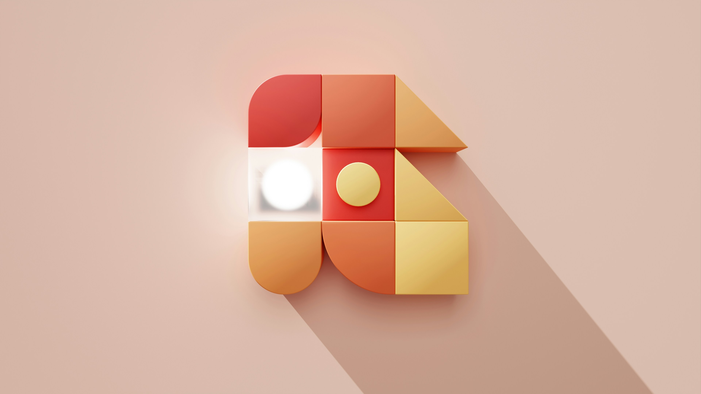
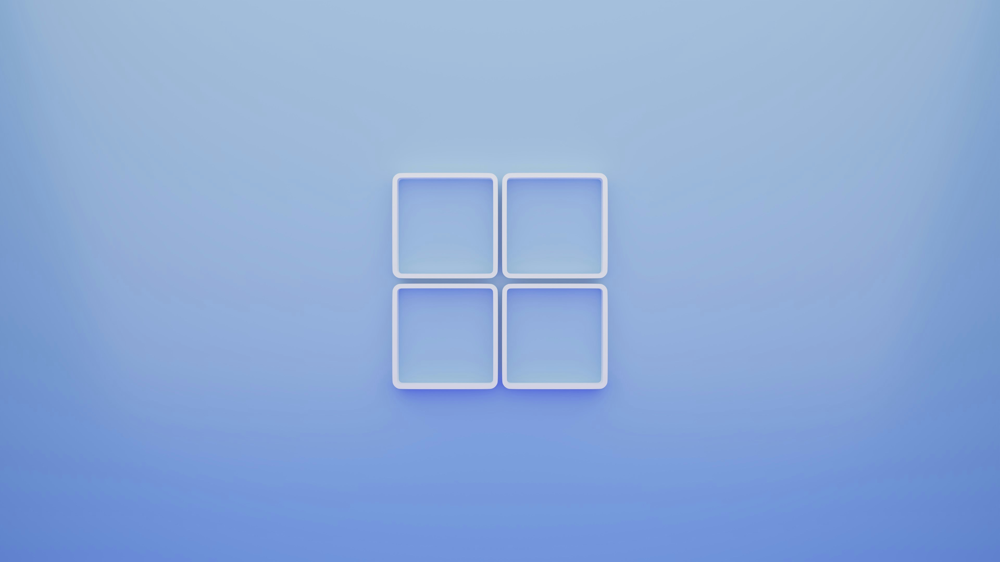
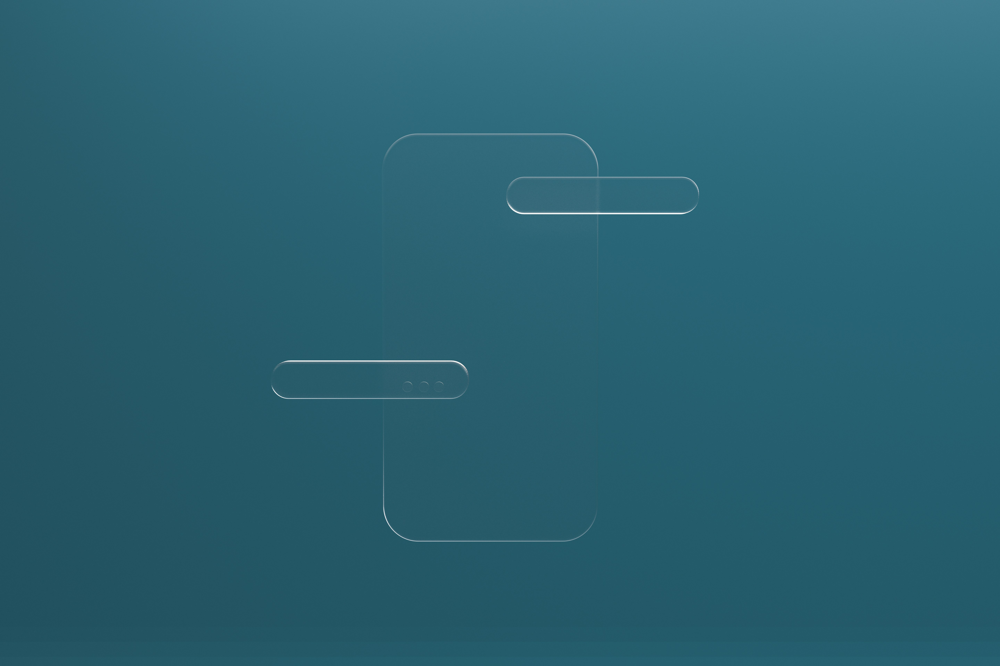
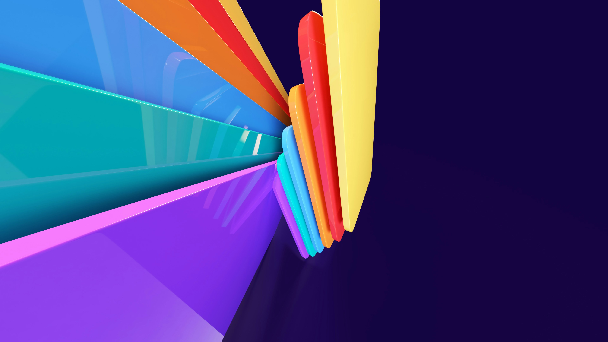

SOBRE MÍ
Soy arquitecto de formación y con casi 10 años de experiencia trabajando en el sector industrial. Sin embargo, hace un tiempo decidí dar un giro a mi vida y dedicarme a lo que realmente me apasiona: la programación. Ahora estoy estudiando Desarrollo de Aplicaciones Multiplataforma (DAM) para prepararme a fondo y dar mis primeros pasos en el mundo del software. Nacido y criado en Barcelona, me considero una persona curiosa y constante, siempre con ganas de aprender y afrontar nuevos retos. También tengo dos galgos que me acompañan en esta nueva etapa, dándome la motivación y compañía que necesito para seguir adelante. Me encanta combinar la creatividad que desarrollé en arquitectura con la lógica y el orden que exige la programación, y creo que esa mezcla me aporta una visión diferente y valiosa para resolver problemas y crear soluciones prácticas. Estoy muy ilusionado con este cambio profesional y con todo lo que está por venir.

PROYECTOS
En esta sección encontrarás una selección de mis proyectos más representativos, desarrollados durante mi formación y de manera autodidacta. Cada uno refleja mi evolución como desarrollador, así como mi enfoque en la escritura de código limpio, funcional y bien estructurado. He trabajado tanto en frontend como en backend, y cada proyecto está acompañado de una breve descripción, tecnologías utilizadas y, cuando es posible, un enlace para ver el resultado en acción.
-

EduQuiz
Aplicación de preguntas tipo test con selección de tema y dificultad desarrollado en Python.
-

GameHub Manager
Aplicación para gestionar clientes, ventas e inventario de una tienda de juegos desarrollado en Java.
-

Super Pirate World
Juego de Plataformas inspirado en Mario, desarrollado en Python utilizando la biblioteca Pygame y siguiendo tutoriales.
-
Roll for Initiative
Aplicación web desarrollada en Python con el framework Django para crear sistemas y salas para juegos de rol de mesa.
-

TimeTrack Pro
Cronómetro y gestor de tareas para mejorar la productividad personal desarrollado en Java.
-

Notas Seguras
Aplicación de notas personales cifradas, con login y sincronización local desarrollado en Python.
-

AutoTest
Simulador de test de conducir con estadísticas de progreso desarrollado en Java.
-

EcoStore
Simulador de tienda online con carrito, productos y pagos simulados desarrollado en Java.
-

RescuePets
Aplicación para adopción de animales con perfiles, filtros y formulario de contacto desarrollado en Python.
CAJA DE HERRAMIENTAS
En esta sección presento los lenguajes de programación, lenguajes de marca y bases de datos que utilizo habitualmente en mis proyectos. Son las tecnologías clave con las que desarrollo y diseño aplicaciones, desde la estructura y la lógica hasta el almacenamiento de datos. Conocer y dominar estas herramientas me permite crear soluciones funcionales, escalables y bien organizadas.
Java |
HTML5 |
||
Python |
CSS3 |
||
MySQL |
JavaScript |
FORMACIÓN
A lo largo de mi trayectoria, he apostado por una formación continua que me ha permitido adquirir conocimientos sólidos y actualizados en diversas áreas. Desde mis estudios iniciales en arquitectura hasta mi actual especialización en Desarrollo de Aplicaciones Multiplataforma, siempre he buscado combinar teoría y práctica para crecer profesionalmente. Esta base formativa me proporciona una visión amplia y me prepara para adaptarme a los cambios y demandas del sector tecnológico.
2025 Cursando |
Técnico Superior en Desarrollo de Aplicaciones Multiplataforma Academia The Power |
2024 |
Certificado de formación en Python Academia CoderHouse |
2023 |
Certificado de formación en Data Analytics Academia CoderHouse |
2011 - 2016 |
Grado en Arquitectura Escuela Técnica Superior de Arquitectura de Barcelona (ETSAB-UPC) |
2009 - 2011 |
Técnico Superior en Desarrollos Urbanísticos y Operaciones Topográficas IES Escola del Treball |
EXPERIENCIA
A lo largo de mi carrera he trabajado en distintos entornos profesionales que me han permitido desarrollar habilidades clave como la responsabilidad, el trabajo en equipo, la adaptabilidad y la resolución de problemas. Esta trayectoria me ha dado una base sólida para enfrentar nuevos desafíos y crecer en cualquier ámbito en el que me involucre.
2021 - 2025 |
INGAL Ingeniería Cargo: Técnico de Obra |
2017 - 2021 |
INGAL Ingeniería - SENCO Construcción Cargo: Delineante |
2014 - 2020 |
Muebles de Tena Cargo: Encargado de local comercial |
2010 - 2012 |
IBINSER Gerencia de Proyectos Cargo: Delineante |
INTERESES
Cuando no estoy programando (o peleándome con algún bug), me gusta rodearme de cosas que me inspiran, me relajan o simplemente me divierten. Escucho muchos podcasts, en especial de historia, ciencia o curiosidades, ya sea mientras paseo con mis dos galgos o cuando estoy concentrado pintando miniaturas de Warhammer, una afición que mezcla creatividad, estrategia y mucha paciencia con pinceles diminutos. También soy muy de videojuegos, sobre todo si es en buena compañía. Me encanta jugar online con mis colegas, echarnos unas risas y desconectar un rato del mundo. A veces somos competitivos, otras simplemente desastre, pero siempre lo pasamos bien. Además, me gusta leer (tanto novela como ensayo), descubrir nuevas bandas sonoras épicas, y perderme en YouTube con vídeos random de historia, tecnología o canales frikis. Me interesa todo lo que me permita aprender algo nuevo sin que parezca que estoy estudiando, y creo que esas pequeñas curiosidades del día a día son las que también me empujan a seguir creciendo como persona y como desarrollador.